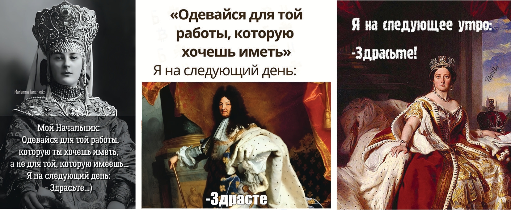

| Van'a | kerka-yn | abu | uz'-ema |
| Vanja | house-ess | neg | sleep-pst2 |
| '(Кажется/Мне сказали, что) Ваня не спал дома.' |
2 Международная лаборатория логики, лингвистики и формальной философии
Исследование коммуникативных компетенций ограниченно рациональных агентов было направлено на поиск новых подходов к разрешению затруднений, препятствующих эффективному информационному обмену в условиях языкового и когнитивного многообразия. В центре внимания находились такие классические для логики и эпистемологии проблемы как концептуальная неопределенность и референциальная непрозрачность, скептицизм в отношении значения, логические и семантические парадоксы, а также новые теоретические и практические вызовы, обусловленные развитием неклассических логических систем, систем искусственного интеллекта и социальных сетей.
Методологически исследование характеризовалось укорененностью в существующих философских традициях и обращением к их истокам не в сугубо исторической, но в реактуализирующей эти традиции перспективе, которое сопровождалось их переосмыслением в контексте современных проблем семантики, семиотики и когнитивных наук. В частности, актуальность семиотической теории Ч. С. Пирса для новейших разработок в области искусственного интеллекта и коммуникации в социальных сетях была подтверждена исследованиями А.-В. Пиетаринена, В. А. Шумилиной и А. С. Бобровой.
Методология синехизма, разработанная в поздних трудах Ч.-С. Пирса, была распространена В. А. Шумилиной и А.-В. Пиетариненом на современные подходы к коммуникации и научным исследованиям, включающие искусственный интеллект. Согласно доктрине синехизма, «непрерывность управляет всей областью опыта в каждой ее части» [1: 343–344; ср. 2] и, следовательно, «все, что существует, непрерывно» [3: 70–71]. В. А. Шумилина и А.-В. Пиетаринен показали, что синехизм, делая акцент на простоте и универсальности законов развития, поддерживает передовые исследования, которые, опираясь на континуальность искусственной и естественной жизни, осуществляют трансфер идей из антропоцентричных областей науки. В качестве примера рассматривались исследования естественных и искусственных нейросетей.
В общем виде синехизм был сформулирован Ч. -С. Пирсом как такой взгляд на науку, который, являясь «регулятивным принципом логики, предписывающим, какого рода гипотезы могут быть рассмотрены и исследованы» [4: 118], предотвращает появление исследовательских лакун, поскольку акцентирует внимание на непрерывности исследуемого. В. А. Шумилина и А.-В. Пиетаринен предлагают выделить в философии науки Ч.-С. Пирса три взаимосвязанные установки: синехизм, когерентистская методология и пан-инференционализм [4: 117]. В связи с когерентизмом и пан-инференционализмом авторы обращают внимание на то, что вывод определяется Ч.-С. Пирсом как сознательное и контролируемое принятие убеждения [3: 267], которое влечет следствия путем делиберации, в рамках которой оно фигурирует как привычка мысли [5: 37; 1: 215–216]. В отличие от фундаменталистской эпистемологии, в эпистемологии Пирса каждое новое убеждение приводит к каскаду изменений. Таким образом, методологический принцип синехизма оказывается связан с прагматизмом Ч.-С. Пирса, его идеями о ретродукции (абдукции) и фаллибилизме, которые в свою очередь образуют фундамент логической теории рассуждений о знании.
Актуализируя наследие Ч.-С. Пирса, В. А. Шумилина и А.-В. Пиетаринен связали пирсеанский синехизм с современной программой минимального физикализма [6]. Минимальный физикализм опирается на квантовую теорию информации, описывая обмен информацией между системой и ее окружением как двустороннее физическое взаимодействие. При этом под системой понимается когнитивный физический агент (естественный или синтетический), который может находиться на любом уровне организации, включая организмы, социальные системы, экосистемы и метапопуляции. Минимальный физикализм поддерживает антиредукционистский взгляд на континуум наук, вместе с тем обеспечивая минимальное количество теоретических посылок и независимость от конкретных имплементаций. Одна из его мотиваций – проект унификации физических и психологических наук при помощи квантовой теории информации, созвучный, как показали В. А. Шумилина и А.-В. Пиетаринен, идеям Пирса о континуальности всего существующего.
Согласно В. А. Шумилиной и А.-В. Пиетаринену, предположение о единстве континуума сущего оказывается фундаментом для реалистичного, избегающего телеофобии взгляда на научные открытия и прогресс в науке [1: 345]. Телеономическая перспектива, акцентирующая высокую адаптивную функциональность систем, становится все более актуальной в науках о жизни и ее происхождении [7]. Осмысление в терминах решения проблем и достижения цели позволяет анализировать агентность гибридов с искусственными и естественными составляющими, которые также являются целеориентированными. Для подтверждения своего тезиса авторы обратились к работам М. Левина и его соавторов [8–11], в которых они увидели переизобретение синехизма, отмечая, что, если во времена Ч.-С. Пирса такие инженерные проекты, как искусственная жизнь и гибридные формы, были нереализуемы и не подвергали испытанию традиционный взгляд на агентность, сознание и мышление, они, тем не менее, не были непредставимы. Сегодня такие проекты уже осуществляются, реактуализируя принцип синехизма.
Обращаясь к научной практике, В. А. Шумилина и А.-В. Пиетаринен проследили действие регулятивного принципа синехизма в наиболее технологичной области современных биологических исследований, связанной с использованием искусственного интеллекта, позволяющего, в частности, строить модели, в которых способность клеток справляться с новыми задачами используется для решения обратных биоинженерных задач [8: 689]. В. А. Шумилина и А.-В. Пиетаринен выявили следующие нетривиальные особенности рассмотренной технологии, реактуализирующие синехизм Ч.-С. Пирса и его теорию рассуждения. Во-первых, возможность самостоятельного исправления ошибок позволяет моделировать активный вывод [12–14] и, следовательно, ретродуктивное рассуждение (абдукцию) Ч.-С. Пирса [15]. Во-вторых, наличие «обратной проблемы» также свидетельствует о релевантности рассуждения по абдукции, в результате которого новая идея возникает в качестве рабочей гипотезы. В-третьих, прагматическая максима Ч.-С. Пирса управляет исследованием, ориентируя его на истолкование нового понятия в терминах следствий его использования. В-четвертых, интеллектуальный континуум современной науки включает в себя технологии искусственного интеллекта, которые превосходят человеческие способности в том, что касается распознавании паттернов. Как следствие ожидается появление новых подходов к осмыслению методов рассуждений и навыков решения задач, которые недоступны естественному интеллекту.
Как показали В. А. Шумилина и А.-В. Пиетаринен, методологический синехизм оказывается связующим звеном, обеспечивающим инвариантность принципов обучения и оптимизации на различных уровнях организации интеллекта, управления и коллективного принятия решений. В полном соответствии с пан-инференционализмом Ч.-С. Пирса, эволюционные задачи аналогичны на разных уровнях организации, а в схемах их решения наблюдается общий паттерн рассуждения как движения мысли от посылок к заключениям. Два самых ярких примера, к которым обращаются авторы, - диахроническая обработка информации (вычисление) и зависимая от опыта модификация внутренней структуры для дальнейшего взаимодействия с окружением (память).
Эволюционизм, образующий фундамент синехизма в сфере биологии, оказывается, как отмечают В. А. Шумилина и А.-В. Пиетаринен, важным и для теории знаков Ч. С. Пирса, поскольку знаки являются с его точки зрения объектами эволюции, поддерживающими «прирост значения» [3: 130]. По мере интенсификации коммуникации системы с ее средой, а также внутри системы возникают новые значения в рамках сигнальных систем языка и другая информация, способная запустить и поддержать инновационные циклы обучения. Предписываемая прагматизмом оценка понятий в терминах следствий их употребления сдвигает фокус внимания при изучении языка на прагматику и контекст.
Таким образом, результаты В. А. Шумилиной и А.-В. Пиетаринена, реактуализирующие пирсовскую методологию синехизма, оказываются значимыми для самого широкого исследовательского контекста современной науки. Тезис синехизма о непрерывности поддерживает трансфер идей из разных научных областей. Знания вне контекста не существует, но знание, ограниченное лишь своим непосредственным контекстом, остается в некотором смысле бесплодным, так как не позволяет проводить аналогии и осуществлять дальнейшие генерализации.
Исследование А. С. Бобровой, проведенное совместно с Н. Лукьяновой и Е. Фелл, было также посвящено реактуализации семиотического наследия Ч.-С. Пирса, а именно, изучению интернет-мемов как семиотических феноменов с позиции его теории знаков. Авторы отказались от биологической трактовки мемов как «генов культуры» [16; 17] и предложили анализировать их структуру и трансформацию через понятия знака, иконичности, типа, токена и привычки вывода. Особое внимание исследователей было уделено механизмам, которые позволяют интернет-мемам сохранять узнаваемость при изменчивости их формы.
Согласно рабочему определению, которое дали А. С. Боброва с соавторами, интернет-мемы представляют собой единицы информации, имеющие преимущественно юмористическое содержание и обычно оформленные в виде коротких видеороликов или изображений с подписями (другие определения см. в [18]). Как подчеркнули авторы, успех мема зависит от его способности мгновенно передавать сообщение; в этом смысле мем, несомненно, является знаком, имеющим семантику. Однако мем не просто рационально воспринимается и анализируется, он влияет на наши чувства, потому что его информационная составляющая сливается с эмоциональной. Чтобы понять мем, мы должны эмоционально взаимодействовать с идеей, которую он несет, «чувствовать» её, и именно поэтому может быть сложно передать сообщение, заключённое в меме, словами, то есть посредством набора предложений. (Важно, однако, не путать передачу идеи мема с его объяснением, которое вполне возможно сформулировать с помощью предложений.)
А. С. Боброва с соавторами рассматривают интернет-мемы как знаки, сочетающие визуальный и текстовый компоненты. Они показывают, что с точки зрения классификации знаков по Ч.-С. Пирсу интернет-мемы могут быть отнесены к иконическим знакам, которые передают эмоции и настроения через метафорическое сходство с объектом. Икона-метафора, которую представляет собой мем, подразумевает существование опосредующего элемента, и эта роль отведена культуре, с которой интерпретатор должен быть знаком. Как подчеркнули авторы, мемы функционируют в рамках конкретной культурной среды, что ограничивает их распространение за её пределы. Это связано с необходимостью для интерпретатора понимать культурные коды, заложенные в конкретном меме.
Вместе с тем на любой интернет-мем можно смотреть как на тип, а можно – как на токен данного типа. Тип – это общая идея мема, его структура, токен же – единичное воплощение типа (например, мем с определённым изображением и текстом). Создание новых токенов, сохраняющих узнаваемость типа, представляет собой процесс трансформации мема. Авторы обращаются к введенному Ф. Беллуччи и Дж. Бертоном [19] термину «появление» для обозначения копий одного и того же знака: токен – это конкретный экземпляр типа, а появление – это копия токена. Они отмечают, что можно говорить о трансформации мема только в случае возникновения его нового токена, а не в случае его повторного появления. Новый токен появляется, когда исходный тип этого мема сохраняется в новом токене, и интерпретатор распознаёт его как таковой.
А. С. Боброва с соавторами ответили на вопрос, что определяет те изменения в меме, которые обуславливают появление нового токена того же типа. Чтобы построить теорию таких изменений, они обратились к введенному Ч.-С. Пирсом понятию «привычка вывода» (habit of inference). (Детальное исследование роли этого понятия в семиотике Пирса см. у Ф. Белуччи и А.-В. Пиетаринена [20]; также см. [21]). По словам самого Пирса, привычка «может быть выражена в предложении, в котором антецедент должен описывать все возможные предпосылки, на которых она может действовать, а консеквент должен описывать, каким образом вывод, к которому она приведет, будет связан с этими предпосылками» [3: 354]. Пирс использует этот термин вместе с понятием руководящих принципов, которые «могут быть сформулированы в предложении, утверждающем, что каждое предложение C, связанное заданным общим образом с любым истинным предложением P, является истинным» [5: 107]. Авторы уделили отдельное внимание разграничению этих понятий и пришли к выводу, что руководящий принцип функционирует на логическом уровне, а будучи помещен в реальный жизненный контекст, уступает место социально ориентированной и, следовательно, более естественной привычке. Именно привычка регулирует формирование вывода на уровне конкретной информации, и это образует логическое ядро мемов.
Функция руководящего принципа, как показывают А. С. Боброва с соавторами, становится наиболее ясной в дедуктивных построениях с проявлением их валидности, однако отсутствие дедуктивной валидности не означает отсутствия самого принципа, поскольку он также отвечает за ценность индуктивного рассуждения с его обобщениями, а также абдукции, стимулирующей новые исследования. Фундаментальная структура дедукции, согласно Ч.-С. Пирсу, регулирует получение результата как применения правила к частному случаю; индукция отвечает за получение нового правила, а гипотеза (в более поздних работах абдукция) позволяет сказать что-то новое о частном случае, основываясь на применении общего правила к конкретному результату. С помощью этих логических компонентов А. С. Бобровой с соавторами были раскрыты способы трансформации мемов. Процесс понимания мема авторы описали как псевдодедукцию, которая может быть соотнесена с отменяемыми рассуждениями, где роль правила играет тип мема, а конкретное проявление мема – токен – рассматривается как частный случай. Привычка вывода отвечает в этом процессе за то, как трансформируется мем, а также за корректировку процессов, определяющих эту трансформацию. Этот механизм гарантирует, что информация, переданная из токена, сохраняет свой исходный тип. Он функционирует таким образом до тех пор, пока интерпретатор понимает тип мема, а информация, предлагаемая токеном, соответствует типу мема. Если эта связь между типом и токеном прерывается, непрерывность производства и восприятия мема нарушается.
А. С. Боброва с соавторами заключили, что в паре «изображение – подпись» тип мема с большей вероятностью сохраняется, если подпись остается без изменений. Хотя возможно также сохранение типа благодаря неизменности именно изображения, в этом случае есть вероятность, что тип не будет правильно распознан, и привычка вывода не сработает, в результате чего мем будет утерян. Последнее, по мнению авторов, можно объяснить тем, что изображения потенциально могут быть интерпретированы многими способами, в отличие от словесных фраз, где варианты интерпретации ограничены.
Свои выводы они подкрепили анализом двух примеров трансформации мемов: 1) мем «Я и мой начальник» (с изображением монархов) и 2) мем «Рассеянный бойфренд». В первом случае тип задаётся текстом: «Одевайся для работы, которую хочешь иметь», в то время как изображения меняются (разные монархи или персонажи) рисунок 2.1, рисунок 2.2, рисунок 2.3. Во втором случае тип задаётся изображением, а текст меняется рисунок 2.4, рисунок 2.5. Как показали авторы, во втором случае вариативность выше, но мем остаётся узнаваемым, пока изображение передаёт идею «желания лучшего».




Таким образом, А. С. Боброва с соавторами актуализировали семиотическое наследие Ч. С. Пирса применительно к такому сложному и малоизученному явлению, как интернет-мем. Они продемонстрировали плодотворность своего подхода на практике, проследив изменчивость структурных составляющих мема на конкретных примерах и подтвердив ими свои теоретические построения.
Проблемы неопределённости референции в мультиагентной коммуникации, а также вопрос о взаимосвязи эпистемологического скептицизма и скептицизма в отношении значения находились в центре внимания Е. Г. Драгалиной-Черной, Л. Б. Макеевой, А. Ю. Моисеевой и М. А. Смирнова.
В исследовании Е. Г. Драгалиной-Черной проблема координации субъективных точек зрения для достижения общей референции рассматривалась в связи с гипотезой Г. Фреге о «логических чужаках» – воображаемых существах, чьи законы мышления противоречат нашим собственным. Во введении к работе «Основные законы арифметики» Г. Фреге описывает мысленный эксперимент, иллюстрирующий опасность смешения логического и психологического, а именно, логических законов бытия истинным и психологических законов признания истинным. Он предлагает представить гипотетических существ, «законы мысли которых прямо противоречат нашим собственным и часто приводят к противоположным результатам даже на практике» [22: 14]. Благодаря работам Дж. Конанта, эти существа известны сегодня как «логические чужаки» (“logical aliens”) [23]. Рассуждения «логических чужаков» не являются ошибочными, поскольку логические ошибки возникают в том случае, когда агенты, подчиняющиеся правилам логики, нарушают эти правила. Однако «логические чужаки» нарушают правила логики просто потому, что не подчиняются им.
С точки зрения Г. Фреге, «логические чужаки» принципиально невозможны, поскольку логические «законы мысли являются наиболее общими законами, универсально предписывающими способ мышления, которым мы обязаны руководствоваться, если вообще хотим мыслить» [22: 12]. Как показывает Е.Г. Драгалина-Черная, такой подход сближает Г. Фреге с И. Кантом, признававшим конститутивность логики для мышления. Она обращает, однако, внимание на важное различие в трактовке нормативности логики между И. Кантом и Г. Фреге.
Кант поясняет конститутивный характер правил общей логики через аналогию с общей грамматикой, «которая не содержит ничего, кроме одной лишь формы языка вообще, без слов, составляющих материю языка» [24: 267]. Подобно тому как невозможно говорить на каком-то языке, нарушая его грамматические правила, невозможно нарушать формальные правила, предписываемые рассудку логикой. Логические ошибки как нарушения таких правил силами одного лишь рассудка оказываются невозможными: «Рассудок сам по себе не может заблуждаться потому, что, когда он действует только по своим законам, результат его (суждение) необходимо должен согласоваться с этими законами, а в согласии с законами рассудка и заключается формальная сторона всякой истины» [24: 215]. И. Кант исходит здесь из общего принципа: «Никакая сила природы не может сама собой отступать от своих собственных законов» [24: 215], полагая, что «заблуждение происходит только от незаметного влияния чувственности на рассудок, вследствие чего субъективные основания суждения соединяются с объективными и отклоняют их от их назначения» [24: 215–216]. Как отмечает Е.Г. Драгалина-Черная, проблема, однако, в том, что хотя в «формальном смысле» логические ошибки являлись бы невозможным в принципе мышлением, противоречащим своим собственным законам, такая невозможность сделала бы избыточной нормирующую функцию логики. Нормативность логики как «критики познания» связывается в кантовской аналитике способностей с дихотомией чувственности и рассудка. К заблуждению может привести лишь «незаметное влияние чувственности на рассудок», на правильное, то есть «согласное с самим собой» его применение [24: 269].
Следуя за И. Кантом в признании конститутивности логики, Г. Фреге критикует, однако, аналогию между правилами грамматики и законами логики, которые он трактует как наиболее общие законы бытия истины. Эти законы «устанавливают стандарт для нашего мышления, если оно направлено на достижение истины. Они не находятся в том же отношении к мышлению, в каком грамматические законы находятся к языку, как если бы они выражали сущность нашего человеческого мышления и изменялись вместе с ним» [22: 12]. В отличие от И. Канта, для которого «логический критерий истины» есть лишь «негативное условие всякой истины» [24: 95], Г. Фреге считает предметом логики именно истину. Логика нормативна для мышления постольку, поскольку оно направлено на истину: «Мы должны признать, что правила нашего мышления и нашего полагания истинным предписаны законами истины» [22: 12]. Как и для И. Канта, формальность логики является для Г. Фреге следствием ее общности. Однако он рассматривает ее нормативность в отношении мышления как производную от ее дескриптивности. По Г. Фреге, закон любой науки, не только логики, но и, скажем, геометрии или физики, нормативен для мышления в силу того, что он описывает то, что есть и, соответственно, предписывает, как правильно мыслить о том, что есть. Отличие логики от других наук только в предельной степени ее общности.
Таким образом, при всем различии их мотиваций, ни И. Кант, ни Г. Фреге не считают, что «логические чужаки» рассуждают иначе, чем мы, потому что они вообще не признают их рассуждающими. Е. Г. Драгалина-Черная обращает внимание на то, что такая позиция может показаться безнадежно устаревшей в силу ее очевидной несовместимости с признанным в современной логике плюрализмом логических систем. Проясняя природу логического плюрализма, она использует схоластическую дихотомию, в соответствии с которой различаются два вида логики – logica docens (логика преподаваемая и изучаемая) и logica utens (логика применяемая в рассуждениях). Автор показывает, что современные дискуссии о плюрализме в области logica docens берут начало от тезиса У. Куайна о «вариативности значений» логических терминов, согласно которому «альтернативные логики практически неотделимы от простого изменения в употреблении логических слов» [25: 355]. Такие изменения могут затронуть не только значения логических связок и кванторов (таких как «или», «и», «все»), но также значения метатеоретических выражений (таких как «валидность», «непротиворечивость», «категоричность»). Однако, поскольку выбор теории и ее концептуальной системы происходят синхронно, тезис о «вариативности значений» логических терминов не исключает возможности рациональной ревизии logica docens и, следовательно, плюрализма логических систем.
Центральным для Е. Г. Драгалиной-Черной оказывается, таким образом, вопрос о том, как справляется с плюралистским вызовом logica utens. Это затруднение она формулирует в виде вопроса «Каково быть логических чужаком?» по аналогии со знаменитым вопросом Т. Нагеля «Каково быть летучей мышью?» [26]. Критикуя подобную постановку вопроса Т. Нагелем, Н. Малкольм заметил, что, используя метафизическое понятие «каково это», мы как бы апеллируем к чьей-то субъективной картине мира, якобы не доступной наблюдению извне [27: 50]. Задаваясь вопросом «Каково быть логическим чужаком?», Е. Г. Драгалина-Черная избегает, однако, этой ловушки, не ставя задачу постижения субъективных состояний «логических чужаков», якобы фундирующих их скрытую способность использования непривычных нам понятий. В реальной коммуникации мы взаимодействуем не с существами, обладающими совершенно чуждыми нам системами понятий, либо лишёнными какой-либо системы понятий вообще; напротив, мы коммуницируем с когнитивными агентами, уже вовлечёнными, пусть и несовершенным образом, в разнообразные логические практики. Успешность такой коммуникации обеспечивается интерпретационными рассуждениями, цель которых отличается от традиционной цели рассуждений в конкурентном логическом дискурсе. Интерпретационные рассуждения носят не состязательный, а кооперативный характер, ориентируясь на нарративную задачу «понимания истории» или «угадывания подразумеваемой модели» (см. [28]).
Исследование Л. Б. Макеевой было посвящено концептуальной и генетической характеристике внутреннего реализма Х. Патнэма, в частности, рассмотрению его связи с эпистемологическими идеями И. Канта. Она опровергла точку зрения, согласно которой подход Х. Патнэма стремился к устранению из реализма всякого отношения к метафизике и показала, напротив, что для него ключевое значение в понимании И. Канта имела задача «вычитать» у И. Канта интернализм. Л. Б. Макеева отталкивалась от того, что Х. Патнэм характеризовал метафизический реализм как совокупность трех основных тезисов – тезиса независимости (мир состоит из фиксируемой совокупности независимых от сознания объектов), тезиса единственности (мы можем дать только одно полное и истинное описание мира) и тезиса соответствия (истина есть некоторого рода отношение соответствия между словами, или знаками мыслей, и внешними вещами и множествами вещей) [29]. Поскольку для Х. Патнэма как философа, принявшего лингвистический поворот, вопрос о том, как связаны между собой человеческий разум и мир, истолковывается как вопрос об отношении между языком и миром, а в решении этого вопроса определяющая роль отводится референции, главный посыл его критики метафизического реализма состоит в том, что референция языковых выражений к независимым от сознания объектам невозможна. В защиту этого положения американский философ выдвинул ряд известных аргументов (аргумент о «мозгах в банке», теоретико-модельный аргумент и др.), которые стали предметом широкого обсуждения в аналитической философии. С одной стороны, эти аргументы были призваны показать, что если мы понимаем референцию в духе метафизического реализма, то есть как отношение к независимым от сознания объектам, то никакого количества признаваемых истинными предложений, включая предложения, использующие термин «референция», не будет достаточно, чтобы единственным образом определить референцию наших терминов. Таким образом, в метафизическом реализме референция не может быть однозначно определена. С другой стороны, эти аргументы показали беззащитность метафизического реализма перед скептицизмом. Как отмечает Л. Б. Макеева, метафизический реалист, трактующий референцию как отношение к объектам, как они есть сами по себе, создает «эпистемическую пропасть» между субъективностью человеческих восприятий и представлений о мире и объективностью самого мира, тем самым подрывая собственный проект – обосновать возможность истинных знаний о мире.
Для преодоления этих и многих других неразрешимых для метафизического реализма трудностей и был предназначен внутренний реализм Х. Патнэма. В своей формулировке внутреннего реализма Х. Патнэм каждому из трех тезисов метафизического реализма противопоставил иной взгляд: (1) «“объекты” не существуют независимо от концептуальных схем. Мы разрезаем мир на объекты, когда вводим ту или иную схему описания» [29: 52]; (2) может существовать множество истинных описаний мира, отражающих разнообразные человеческие интересы и цели [29: 50]; (3) истина представляет собой «(идеализированную) рациональную приемлемость, некий вид идеальной согласованности наших представлений друг с другом и с нашим опытом в той мере, в какой этот опыт находит выражение в нашей системе представлений» [29: 49–50.]. С его точки зрения, поскольку референция лингвистических выражений определяется концептуальной схемой языка, объекты и обозначающие их выражения становятся чем-то внутренним по отношению к соответствующей схеме, что превращает определение референции в набор тавтологий: «стул» обозначает стулья, «кошка» обозначает кошек и т.п. При таком взгляде референция сохраняет однозначный характер.
Все эти идеи, конечно, обнаруживают значительное расхождение с той позицией, которую обычно называют кантианской. Однако предлагаемая Л. Б. Макеевой интерпретация состоит в том, что эти расхождения можно объяснить целью, которой придерживался Патнэм при реконструкции взглядов И. Канта. Он не стремился к историко-философской точности, а старался взять у И. Канта то, что счел интересным и полезным для исследователя, работающего во второй половине ХХ в. Х. Патнэм обнаружил, что перед современными философами стоят задачи, аналогичные тем, что стояли перед немецким мыслителем, с той лишь разницей, что, разделенные двумя столетиями, они формулируют эти задачи по-разному, используя разный концептуальный инструментарий. Если И. Кант решал задачи метафизики через выявление того, как соотносятся человеческие представления с их предметами или с реальностью в целом, то у Патнэма и других современных философов упор сделан на анализе отношения референции, связывающего языковые знаки и объекты в мире. Такой значительный концептуальный и терминологический сдвиг не мог, согласно Л. Б. Макеевой, не сопровождаться расхождением в целом ряде сопутствующих вопросов. Тем не менее Х. Патнэм действительно нашел свидетельства того, что И. Кант в своих работах наметил интерналистскую перспективу как для понимания самой метафизики, так и для решения метафизических проблем.
Как показала Л. Б. Макеева, в первую очередь именно тезис Х. Патнэма о внутреннем по отношению к концептуальным схемам характере референции связывает его с И. Кантом, поскольку у И. Канта, по мысли Х. Патнэма, гарантией возможности достоверного знания является то, что сам объект познания в том виде, в котором он познается, также является внутренним по отношению к сознанию познающего. Интерналистская перспектива, создание которой Х. Патнэм приписал И. Канту, по сути, состоит в признании того, что «сознание и мир совместно создают сознание и мир» [29: xi]. Как полагал Х. Патнэм, у немецкого философа можно обнаружить и некий «намек» на концептуальную относительность, ибо в его «Критиках» перед нами предстает «иной вид разума, а с каждым видом разума и то, что можно назвать иным образом мира: научный разум, этический разум, эстетический разум, юридический разум» [30: 43]. Согласно Х. Патнэму, автор «Критик» был первым философом, отвергшим универсалистское корреспондентное представление об истине, свойственное метафизическому реализму, и осознавшим, что ни о каком соответствии между нашей идеей объекта и независимой от сознания реальностью, ответственной за появление этой идеи, речи быть не может. Таким образом, Х. Патнэм, как показала Л. Б. Макеева, искал и успешно нашел у И. Канта поддержку всех трех тезисов, ключевых для внутреннего реализма.
Исследование Л. Б. Макеевой, будучи в основе своей эпистемологическим, имело результаты, значимые также с точки зрения философии языка, а именно, ею была продемонстрирована неразрывная связь между концептуально зависимым характером познания, его обусловленностью когнитивными особенностями агента, с одной стороны, и представлением знания в языке, его обусловленностью сугубо лингвистическими структурами, с другой стороны. В этом отношении особенно важны выводы о том, как проблема определения референции соотносится с эпистемологическим скептицизмом. Действительно, в отсутствии однозначного способа определить референцию передаваемые при помощи языка сообщения более не могут оцениваться с точки зрения их истинности. Тогда язык оказывается лишь еще одним способом поведения, и даже сам говорящий более не может обоснованно приписывать значения своим словам. Иными словами, скептицизм относительно значения и эпистемологический скептицизм являются обратными сторонами друг друга, и защита от одного необходимо требует защиты от другого.
Проблема преодоления скептицизма относительно значения была рассмотрена М. А. Смирновым и А. Ю. Моисеевой, сформулировавшей свои возражения на его критику аргумента от перформативного противоречия, который, в свою очередь, выдвигают В. А. Ладов [31; 32] и Е. В. Борисов [33; 34] против скептического аргумента Л. Витгенштейна – С. Крипке.
Реконструкция М. А. Смирновым аргумента от перформативного противоречия сводится к следующему. Позиция скептика подразумевает невозможность или бесполезность делать истинные утверждения и, как следствие, формулировать какие-либо теории. В частности, скептицизм относительно значения подразумевает невозможность делать истинные утверждения относительно значения. Чтобы аргумент работал, нужно допустить, что скептик рассматривает свою позицию как некоторую теорию, включающую, по крайней мере, утверждение о невозможности делать какие-либо утверждения. Тогда, отрицая такую возможность, скептик тем самым ее реализует, вступая в перформативное противоречие с самим собой.
Базовый для рассуждения М. А. Смирнова тезис заключается в том, что речевой акт скептика может иметь в контексте его коммуникации иной прагматический характер, отличный от утверждений о реальности, рассматриваемых как истинные, и потому может не вступать в противоречие с позицией самого скептика. С точки зрения введенного Дж. Остином [35] различия между локуцией, иллокуцией и перлокуцией позицию М. А. Смирнова можно описать как сомнение в том, что предложения, локутивно эквивалентные утверждениям, используются скептиком именно в этом иллокутивном модусе, а не являются шуткой, театральной постановкой или вообще бессмыслицей. В результате такого сомнения можно трактовать речь в модусе скептической иллокуции как прагматически осмысленную.
В свете подобной реконструкции и остиновской дистинкции М. А. Смирнов обратился к проблеме скептицизма относительно значения и задался следующим вопросом: в отношении какого значения релевантен скептический аргумент – локутивного, иллокутивного или перлокутивного? В результате были получены следующие выводы:
1. Чтобы представить скептический аргумент как направленный на локутивное значение и при этом совместить его с теорией речевых актов, нужно разграничить в семантике два аспекта: с одной стороны, аспект значения, т.е. соотнесение языковых выражений с некоторыми объектами; с другой стороны, аспект значимости, т.е. cамо наличие таких объектов, которые эти выражения могли бы означать, а также структурных связей между ними. М. А. Смирнов заключил, что скептицизм проблематичен для первого аспекта, но это оказывается несущественным, так как для обеспечения локуции нужна лишь сама возможность абстрактного инварианта выражений, относящихся к некоторому типу.
А. Ю. Моисеева поставила под вопрос легитимность такого рассуждения, указав на то, что подобный взгляд на язык никак не помогает исследователю решать его теоретические задачи. Она подчёркнула, что семантические законы и правила имеют смысл лишь постольку, поскольку мы считаем, что они определенным образом относятся к «нормальной» языковой практике – регулируют и объясняют эту практику. Скептицизм относительно значения вызывает беспокойство именно потому, что значение нам нужно для уверенности в том, что наши языковые практики регулярны, что наш язык «работает» так, как мы от него ожидаем. И если в какой-то момент наши ожидания не оправдываются, мы хотим знать, почему это произошло. Для этого недостаточно одной лишь абстрактной возможности приписать значения словам так, чтобы вся система языка оказалась семантически согласованной. Нужно понимать, что именно слова означают (в трактовке значения слова «понимать», А. Ю. Моисеева опирается на теорию значения как «примитивной уместности» Х. Гинсборг [36]). Против возможности такого понимания и нацелен скептический аргумент.
2. Если представить скептический аргумент на иллокутивном уровне, его суть состоит в неопределенности интерпретации, то есть в невозможности понять интенцию, стоящую за употреблением говорящим определенных выражений в конкретном случае. По мнению М.А. Смирнова, на иллокутивном уровне синтаксический аспект языка оказывается неважным, так как сам вопрос об иллокутивном значении может встать лишь при наличии локутивного значения. Интерпретация же иллокутивных значений происходит при помощи абдуктивных умозаключений и носит вероятностный характер, что делает релевантной проблему скептицизма относительно значения.
А. Ю. Моисеева согласилась с тем, что, хотя высказывания скептика и правда выглядят так, как если бы они были сделаны с целью утверждать что-то истинное (более того, именно так они воспринимаются сторонниками аргумента от перформативного противоречия), это лишь абдуктивный вывод, который легко может оказаться ложным. Дополнительно она указала, что сама постановка проблемы скептицизма относительно илокутивного значения возможна лишь после отражения скептической аргументации на уровне локутивного значения.
3. Что касается перлокутивного аспекта (реального практического влияния актов коммуникации на чувства, мысли и поведение реципиентов), то, с точки зрения М. А. Смирнова, именно здесь скептицизм относительно значения получает разрешение и снимается как проблема. Поскольку множество наших интерпретаций ограничивается фактом нахождения и эффективного взаимодействия внутри одного действительного мира, М.А. Смирнов пришел к выводу, что именно перлокутивный аспект значения обеспечивает тот базис, на котором основывается относительная устойчивость и интеллигибельность локутивного и иллокутивного аспектов.
А. Ю. Моисеева противопоставила подходу М. А. Смирнова собственную аргументацию, не сводящуюся к разрешению скептического сомнения. На ее взгляд, именно перлокутивный уровень делает скептическую позицию философски несостоятельной и, по сути, обеспечивает тот самый эффект, о котором В. А. Ладов и Е. В. Борисов говорят как о перформативном противоречии. Однако речь здесь ведется ею уже не о правилах языка, а о правилах и конвенциях, существующих в деятельности под названием «философия». По утверждению А. Ю. Моисеевой, скептическая позиция является самоподрывной именно с точки зрения того, чем мы занимаемся, когда философствуем. Обоснование этого тезиса исходит из нормативности философской деятельности. Она регулируется имплицитными конвенциями, одной из которых является разделение определенной коммуникативной интенции. Участвуя в философской дискуссии, человек обязуется принимать установку на то, что его высказывания будут пониматься как утверждения, претендующие на истинность, и в качестве таковых эти высказывания можно защищать, подвергать сомнению, выводить из них следствия и т.п. (см. [37]). Если, как утверждает М. А. Смирнов, мы не можем атрибутировать скептику интенцию сказать нечто значимое, то мы лишаем почвы не только аргумент от перформативного противоречия, но и саму дискуссию о скептицизме. Отсюда А. Ю. Моисеева сделала вывод, что артикуляция скептицизма относительно значения в философском контексте неизбежно приводит скептика к тому, что можно назвать перформативным противоречием на уровне перлокутивного значения: содержание высказывания скептика противоречит не самому акту высказывания, а воздействию этого высказывания на адресата в рамках определенного института осмысленной речи, именуемого философией.
Таким образом, в полемике А. Ю. Моисеевой с М. А. Смирновым актуализирован статус перформативов как речевых актов, направленных на то, чтобы не просто передать какое-то значение, а учредить его. Было обнаружено, что вне зависимости от того, успешны или неуспешны рассматриваемые перформативные высказывания, их семантический анализ важен для обоснования теории значения как таковой. В этой связи была предложена критика существующих подходов в рамках формальной семантики перформативов, а также представлены модификации, преодолевающие обнаруженные недостатки.
М. А. Смирновым была рассмотрена также проблема семантического анализа перформативных высказываний в рамках онтологии «выполнимых» (satisfiable) объектов, предложенной Ф. Молтман [38–41]. Показано, что эта онтология предлагает естественное решение ряда проблем референции и является перспективной альтернативой как стандартным остинианским взглядам, так и классической пропозициональной семантике. Основная идея М. А. Смирнова состоит в том, что введение в семантику выполнимых объектов является ключом к интегративному взгляду на истину и успешность перформативов через более общее понятие выполнения.
Как отметил автор, трудности в определении референта часто вызваны онтологическими предрассудками. В качестве примера он привел невербальные знаки (зеленый свет светофора, выстрел стартового пистолета), референтом которых интуитивно является разрешение – сущность, не укладывающаяся в традиционные онтологические схемы. Проведено сравнение трех вариантов базовых онтологических сущностей для референциальных теорий значения.
1. Классические пропозиции. Например, в стандартной фрегевской концепции пропозиции – это абстрактные, интерсубъективные и вневременные сущности («мысли»). М. А. Смирнов подверг сомнению метафизические предпосылки этого подхода, в частности, тезис о единой «науке» как совокупности всех истинных мыслей.
2. Акты и события. М. А. Смирнов рассмотрел подход, берущий за основу акты (как класс событий), и показал, что он сталкивается с трудностями при объяснении референции к таким сущностям как разрешения или обязательства, поскольку попытки свести их к актам оказываются безуспешными. Кроме того, возникает семантическое напряжение между событийными примитивами и атeмпоральными пропозициями на уровне предложения.
3. Аттитюдные и другие выполнимые объекты. Этот подход, развиваемый Ф. Молтман, предлагается как «средний путь». Как показал М. А. Смирнов, концепция выполнимых объектов является естественным расширением стандартной онтологии, которое позволяет более адекватно моделировать значения высказываний в контекстах, где важную роль играют не только истинностные условия, но и иллокутивная сила, модальность, интенциональность.
Выполнимые объекты определяются как сущности, которые (а) имеют условия удовлетворения и (б) зависят от агента. В их число входят аттитюдные объекты (утверждения, суждения, обещания, надежды, решения и т.д.); модальные объекты (обязательства, разрешения, законы, способности); интенсиональные объекты (поиски, долги). Среди этих категорий особый интерес для М. А. Смирнова представляют аттитюдные объекты, которые характеризуются как конкретные сущности, зависящие от агента и его сознания, имеющие информационную природу, ограниченные по времени своего существования, вовлеченные в причинные отношения, а также воспринимаемые. Аттитюдные объекты как вид выполнимых объектов в свою очередь подразделяются на иллокутивные объекты (утверждения, просьбы, обещания); ментальные объекты (убеждения, намерения, мысли); локутивные объекты (акты презентации содержания).
М. А. Смирнов привел пример семантического анализа в рамках этого подхода. Предложение “John made the claim that Mary is a genius” было формализовано так:
\[\exists d (make(John, d)\ \&\ claim(d)\ \&\ prop([that\ Mary\ is\ a\ genius])(d))\]
Здесь d – аттитюдный объект (утверждение), производимый Джоном, а prop задает его условия выполнения (в данном случае – условия истинности).
Как подчеркнул автор, хотя аттитюдные объекты, как и пропозиции, несут содержание и имеют условия удовлетворения, они не тождественны пропозициям, поскольку, а отличие от последних, конкретны и зависят от агента. При этом они не тождественны также и актам, поскольку, в отличие от актов, имеют информационную структуру и условия выполнения. Важным аспектом в понимании данной концепции является также различение каузальности, основанной на содержании и не основанной на содержании. Например, удивление может быть вызвано самим фактом ответа (не-контентная каузальность) или содержанием ответа (контентная каузальность).
При этом М. А. Смирнов отметил недостаточную разработанность подхода Ф. Молтман в части разграничения перформативных и неперформативных высказываний. Было указано, что одни и те же лингвистические формы (например, императивные предложения) могут иметь как перформативное, так и неперформативное прочтение. Это требует построения гибких формальных моделей, способных эксплицитно отражать такие различия в условиях разнообразия языковых употреблений. Автор выделил три аспекта коммуникативной ситуации с перформативами: семантика, включающая перформативный компонент значения, тл есть семантически закодированную спецификацию типов аттитюдных/модальных объектов; прагматика, включающая модификацию через перформативный вывод, то есть контекстуально обусловленное приписывание перформативной силы высказыванию; параметры оценки. Был предложен интегративный взгляд на оценку перформативов на примере различения трех ипостасей слова «обещание» (promise): обещание как иллокутивный объект (речевой акт), обещание как ментальный объект (намерение в сознании говорящего), обещание как модальный объект (обязательство).
Как показал М. А. Смирнов, не существует имплицитных перформативов на семантическом уровне, так как настоящий перформатив должен содержать выражение, обозначающее аттитюдный объект перформативного типа. Так, в предложении
- Hereby, I promise to solve that problem
слово “promise” явным образом обозначает тип иллокутивного объекта – обещание. При этом так же явно обозначается высказывание, кодирующее условия удовлетворения (“hereby”), и спецификация условий удовлетворения (“to solve that problem”) для модального объекта – обязательства, порождаемого иллокутивным объектом. Однако в некоторых случаях высказывание типа
- I’ll solve that problem
может быть интерпретировано как перформативное (“I promise to solve that problem”) благодаря прагматическому выводу слушающего.
На этом основании формулируются условия оценки: во-первых, истинность, во-вторых, успешность. С точки зрения М. А. Смирнова, перформативное высказывание обещания истинно тогда и только тогда, когда в сознании говорящего существует соответствующий ментальный объект. Иначе говоря, истинность тождественна искренности. Успешность же относится к социальным и контекстуальным условиям, при которых иллокутивный объект успешно порождается и, как следствие, порождает модальный объект (обязательство). При этом неискреннее обещание не отменяет факта создания иллокутивного объекта и связанного с ним модального объекта (обязательства). Говорящий, успешно породивший иллокутивный объект (обещание), все равно берет на себя обязательство, даже если не намерен его выполнять, и может быть подвергнут санкциям за его нарушение.
Разрабатываемая М. А. Смирновым фактуальная интерпретация перформативов дает возможность унифицированного подхода к моделированию значений разнотипных высказываний (утверждений, команд, обещаний и т.д.) в рамках одной формальной системы, что особенно важно для обработки естественного языка в условиях его функционального и прагматического многообразия.
Другим направлением исследований, не менее важным в рамках формальной семантики, чем исследование перформативов, является семантика контекстов с обновлением, поскольку они отражают взаимосвязь между определенным пропозициональным содержанием и способом когнитивного схватывания этого содержания говорящим. В этом направлении два исследования были проведены Д. П. Поповой.
Первое ее исследование было посвящено соотношению двух видов конструкций: обычных вложенных конструкций с пропозициональными глаголами, такими как “Jacob said that Bella is a vampire”, и конструкций со слифтами – “Bella is a vampire, Jacob said”. Было показано, что несмотря на схожее лексическое наполнение, конструкции ведут себя по-разному в дискурсе, различаются дистрибуцией пропозициональных глаголов и степенью коммитмента говорящего, что было подтверждено экспериментально. Эти различия были объяснены с помощью осмысления дискурсивного поведения конструкций в терминах импозиции и ассерции.
Слифты [42] являются вводной пропозициональной предикацией, которая состоит лишь из материала главной клаузы:
- Bella, Edward said/Jacob suspects/I warn you, is a vampire.
- Bella is a vampire, Edward said/Jacob suspects/I warn you.
С точки зрения своего пропозиционального содержания слифты похожи на обычные вложенные конструкции:
- Edward said/Jacob suspects/I warn you that Bella is a vampire.
Можно было бы предположить, что слифты и вложенные конструкции имеют одинаковую семантику и условия истинности. Однако степень коммитмента говорящего выше в случае со слифтами, чем с обычными вложениями [43; 44], они ведут себя по-разному в рамках дискурса, а также набор пропозициональных предикатов, которые могут встречаться в слифтах более ограничен, чем в случае с обычными вложениями, в частности фактивные глаголы не встречаются в слифтах.
Различия в поведении слифтов и стандартных вложенных конструкций в рамках дискурса анализируется и формализуется в терминах двух типов обновлений дискурса, формально – обновления модели, репрезентирующей контекст разговора.
- [A: Who said that Sam is a vampire?] B: Dean said that Sam is a vampire. A: No, he didn’t.
- [A: Who is a vampire?] B: Dean said that Sam is a vampire. A: No, he isn’t./#No, he didn’t.
- B: Sam, Dean said, is a vampire. A: No, he isn’t./#No, he didn’t.
В то время как ассерции представляют собой информативные и обсуждаемые обновления, импозиции не могут прямо отрицаться и обсуждаться в дальнейшем дискурсе, представляя собой необсуждаемые обновления. Д. П. Попова предлагает анализировать слифт в (8) и вложенную конструкцию в (7) как импозиции с эвиденциальной функцией, которые указывают на источник информации в семантически вложенной пропозиции.
Различие в поведении слифтов и вложенных конструкций в рамках дискурса сводится к следующим нескольким пунктам: во-первых, если последующий вопрос может быть обращен к пропозициональной предикации в обычных вложениях, то в случае со слифтами это оказывается невозможно. Аналогичное различие имеет место в случае с последующим отрицанием (9, 10): простое отрицание не может отрицать информацию, «спрятанную» в слифте.
- A: US papers reported that Sam is running for political office. B: No, they didn’t.
- A: Sam, US papers reported, is running for political office. B: (#No / √Actually), they didn’t.
Во-вторых, стандартные вложенные конструкции, но не слифты могут взаимодействовать с обсуждаемым вопросом (QUD). (6) – это пример, в рамках которого пропозициональная предикация представляет собой ассерцию, а не импозицию, так как обсуждаемый вопрос – это вопрос об источнике информации. Аналогичная ситуация со слифтом невозможна.
В-третьих, слифты и вложенные конструкции с предикатами пропозиционального отношения отличаются своей способностью переносить фразовую акцентуацию – фокусную и контрастивную. В данном вопросе Д. П. Попова следует за [45–47], подразумевая, что эти фразовые акценты указывают на то, который из обсуждаемый вопросов актуален в данный момент дискуссии [48]. Иными словами, в рассматриваемых случаях фразовая акцентуация – признак ассерции, и, следовательно, не встречается в слифтах.
- Who said who is a vampire?
- JACOBFOC said BELLAFOC is a vampire.
- #BELLAFOC, JACOBFOC said, is a vampire.
Для адекватного семантического описания указанных феноменов Д. П. Попова использует формальный анализ импозиций и ассерций, предложенный в [49] для анализа аппозитивов. Центральная идея данного подхода состоит в том, что импозиции и ассерции различаются тем, как именно они становятся частью общего контекста разговора. Для адекватной репрезентации того факта, что как импозиции, так и ассерции являются информативными, они формализуются как ограничения имеющегося контекстуального множества. Однако если импозиции автоматически ограничивают данное множество, то ассерции делают это лишь в том случае, если они были приняты всеми участниками разговора.
Изначальное состояние дискурса (до произнесения интересующего нас выражения) соответствует множеству пропозиций, принимаемых участниками разговора, чье пересечение и образует контекстуальное множество [50]. По мере появления импозиций и принятия ассерций контекстуальное множество уменьшается. В модели с возможными мирами это означает обновление, в ходе которого часть миров исчезает, сокращая количество совместно рассматриваемых эпистемических альтернатив.
Уже было предложено [49] моделировать контекстуальное множество при помощи пропозициональной переменной, в которой «хранится» актуальное множество пропозиций и все его непустые подмножества. Пусть актуальное множество – это множество из всего лишь трех миров {w1, w2, w3}.
- Context Set: {w1, w2, w3}
Bella is a vampire = {w1, w2}
Jacob said that Bella is a vampire = {w1, w3}
Тогда при обновлении при помощи импозиции часть миров просто исчезнут, в частности w2, если обновление имело вид Jacob said that Bella is a vampire при условии, что обсуждаемый вопрос состоял в том, является ли Белла вампиром. В случае с ассерцией процесс носит аналогичный характер, однако прежде участники разговора должны согласиться на соответствующее обновление контекстуального множества. Такой формальный анализ позволяет переосмыслить поведение слифтов и вложенных конструкций с пропозициональной предикацией в терминах обновлений и исчезающих в связи с ними миров.
Д. П. Поповой также было проведено экспериментальное исследование, подтверждающее полученные теоретические результаты. Общей темой многих современных исследований является тот факт, что коммитмент говорящего по отношению к семантически вложенной пропозиции выше в слифтах. В частности, в [43] эта гипотеза проверялась при помощи теста: после слифта (13) или стандартной вложенной конструкции (14) добавлялось продолжение фразы, которое свидетельствовало о коммитменте говорящего в пользу отрицания семантически вложенной пропозиции. Если имеет место полный коммитмент говорящего по отношению к семантически вложенной пропозиции, то последующее добавление должно создать противоречие.
- Mary assures us that John can be trusted, but I don’t trust him.
- John, Mary assures us, can be trusted, #but I don’t trust him. [43]
Как показывают эксперименты, коммитмент говорящего выше в случае со слифтами, что вместе с их поведением в рамках дискурса указывает на импозициональный характер осуществляемого обновления.
В исследовании Д. П. Поповой использовались аналогичные материалы: подобные предложения испытуемых просили оценить по шкале от -3 (противоречивое предложение) до 3 (непротиворечивое предложение) с шагом в единицу. Сотня испытуемых с Amazon Mechanical Turk, идентифицирующих себя как носителей английского языка, оценивали 21 предложение – 12 филлеров и 9 целевых (15, 16, 17) при помощи указанной шкалы.
- Mary said that Sam is running for political office, but he isn’t.
- Katherine is, Dean thinks, getting married, but she isn’t.
- The hospital will hire a surgeon, Jeremy suspects, but it won’t.
Результаты подтвердили выдвинутую гипотезу: оценки предложений со стандартными вложенными конструкциями были значительно выше, чем со слифтами. При этом различие в оценках между слифтами в конце предложения и встроенными посередине статистически незначительно.
Еще одним подтверждением предложенной теоретической рамки анализа указанных конструкций стала сравнительно большая ограниченность предикатов пропозиционального отношения, способных быть частью слифта. Предикаты пропозиционального отношения, например, думать, знать, бояться, информируют слушающего о субъективном отношении говорящего или иного субъекта к пропозициональному аргументу данного предиката. Так, например, в предложении «Я счастлив, что Дин уехал из города» предикат «счастлив» выражает эмпоциональное отношение говорящему к вложенной пропозиции и в то же время свидетельствует о том, что говорящий считает ее истинной.
На основании их синтаксических и семантических свойств пропозициональные глаголы делятся на две группы – ассертивные и неассертивные [51]. Класс ассертивных предикатов содержит нефактивные и импликативные предикаты, в то время как класс неассертивных предикатов включает в себя нефактивные и фактивные глаголы. Одно из синтаксических свойств ассертивных предикатов, которым не обладают неассертивные, – это способность фигурировать в слифтах. Дж. Хупер определяет основное различие этих предикатов как семантическое, а именно: дело в уверенности в истинности соответствующей пропозиции [51: 95]. Опираясь на работу Дж. Хупер, Д. П. Попова предложила следующие обобщения. Для того, чтобы фигурировать в слифтах, пропозициональный предикат: 1) должен не быть фактивным, т.е. он не должен конвенционально подразумевать истинность пропозиционального аргумента; 2) не должен подразумевать, что говорящий не верит в истинность пропозиционального аргумента.
Таким образом, было предоставлено экспериментальное подтверждение того факта, что степень коммитмента говорящего по отношению к семантически вложенной пропозиции выше в случае со слифтами. Было описано поведение слифтов и обычных вложений в рамках дискурса в терминах импозиции и ассерции. Было установлено, что в то время как часть с пропозициональной предикацией может быть ассерцией или импозицией в случае со стандартными вложенными конструкциями, она может быть лишь импозицией в случае со слифтами. Обратное истинно для семантически вложенной пропозиции.
Основным теоретическим вкладом стало предложение анализировать дискурсы со слифтами и обычными вложенными конструкциями с пропозициональной предикацией при помощи двух видов обновлений контекста: импозиций [49] и ассерций [52]. Было показано, что понятия импозиции и ассерции обеспечивают связь между условиями истинности, поведением в рамках дискурса и намерениями говорящего, позволяя объяснить: 1) различия в коммитменте говорящего, выявленные в ходе экспериментального исследования; 2) различия в дискурсивном поведении слифтов и обычных вложенных конструкций, содержащих пропозициональные предикаты; 3) дистрибуцию в них самих предикатов пропозиционального отношения.
Второе исследование Д. П. Поповой было посвящено эвиденциальным конструкциям на материале коми-зырянского языка и содержит аргументацию в пользу их немодальной интерпретации. Также была предложена формальная семантика, опирающаяся на анализ эвиденциальных конструкций в терминах обновлений контекста, в частности импозиции и ассерции. Были получены результаты, уточняющие соотношение между различными видами обновления (импозиция/ассерция) в теоретической лингвистике и примерами конкретных эвиденциальных конструкций в речевой практике.
Эвиденциальные предложения имеют сложную структуру: они выражают две пропозиции. Одна – основная – пропозиция передает определенное количество информации, вторая – эвиденциальная – указывает на источник этой информации. При этом эвиденциальная система коми-зырянского языка чувствительна по отношению к тому времени, когда говорящий узнал содержание пропозиции, то есть совпало ли оно с протеканием события, а не к тому, был ли он его свидетелем. Эвиденциальное содержание передается в коми-зырянском языке с помощью морфем прошедшего времени. Есть две такие морфемы: так называемая морфема первого прошедшего времени -i (pst1) и так называемая морфема второго прошедшего времени -ema (pst2) [53–61]. Обе морфемы используются для описания событий, произошедших до момента говорения, и имеется хорошо известный эвиденциальный контраст между ними [55; 59; 60]:
| Van'a | kerka-yn | iz | uz' |
| Vanja | house-ess | neg.pst1.3 | sleep |
| '(Обычно: как я сам засвидетельствовал,) Ваня не спал дома.' |
В (18) говорящий использует второе прошедшее время, чтобы передать тот факт, что он сам не был свидетелем того, что Ваня не спал дома, ему сказали об этом или он вывел этот факт из имеющейся у него информации. Предложение типа (19) используется, когда говорящий лично наблюдал тот факт, о котором он говорит. Интерес для исследования Д. П. Поповой представляют контексты, где могут быть использованы обе конструкции, то есть говорящий осуществляет выбор между ними. Различие первого и второго прошедшего времени в коми-зырянском языке сопоставляется с известным делением на прямые и косвенные источники информации, где последние также делятся на инференциальные и репортативные [62; 63].
Среди исследователей имеет место согласие по поводу наличия коммитмента говорящего по отношению к эвиденциальной пропозиции, но ведутся споры о степени коммитмента по отношению к основной пропозиции. Идея, стоящая за этим, сводится к следующему: если говорящий сам не был свидетелем того, что некоторый факт имел место, то не может иметь места полный коммитмент с его стороны по отношению к основной пропозиции. Некоторые утверждают, что коммитмент говорящего и вовсе не имеет места [64]; другие говорят о некоторой его степени [65–67]; есть варианты анализа эвиденцальных конструкций, которые подразумевают полный коммитмент говорящего [68–70].
Два соревнующихся подхода к коммитменту говорящего по отношению к основной пропозиции могут быть представлены следующим образом [70]:
- Модальный подход: Evid(p) = <weak.modal(p); indirect.evid(speaker; p)>
- Немодальный подход: Evid(p) = <p; indirect.evid(speaker; p)>
Оба подхода соглашаются в том, что имеет место эвиденциальная импликация, согласно которой говорящий обладает непрямым свидетельством в пользу основной пропозиции. Различие состоит в отношении к основной пропозиции. Согласно немодальному подходу, основная пропозиция фигурирует в эвиденциальной конструкции в немодифицированном виде, в то время как сторонники модального подхода утверждают, что основная пропозиция имеет связанную с ней модальную силу. Д. П. Поповой было показано, что вопрос о коммитменте говорящего по отношению к основной пропозиции отчасти сводится к вопросу о границе между семантикой и прагматикой. Сторонники модального подхода кодируют наблюдаемое ослабление при помощи семантики, в то время как сторонники немодального подхода объясняют его прагматически. В связи с этим основная стратегия аргументации в пользу немодального подхода – показать отсутствие ослабления в некоторых контекстах, а также возможность подобной его вариативности средствами прагматики, что и делает Д. П. Попова на материале коми-зырянского языка.
Во-первых, говорящий не может напрямую отрицать свой коммитмент по отношению к основной пропозиции в последующем дискурсе. Так, использование второго прошедшего времени не может сопровождаться утверждениями типа “Я не верю, что p”:
| ponm-ys | pyšj-ema, | (*no | me | syd' | og | dumajt) |
| dog.obl-poss3sg | run.away-pst2 | but | i | so | neg.prs.1 | think |
| 'Видимо, собака убежала, но я так не думаю.' |
Во-вторых, ослабление исчезает, когда имеется вложенная конструкция с глаголом отношения. В (23) в дополнении глагола стоит простая, не модифицированная пропозиция:
| Maša | vis'tal-is | pet'a | gәtras'-ema |
| Masha | say-pst1.3sg | Petja | marry-pst2 |
|
a. ‘Masha said that Petja got married.’ b. ‘#Masha said that Petja might/must have gotten married.’ |
В-третьих, степень коммитмента говорящего крайне зависима от контекста: она может отличаться в зависимости от надежности источника информации. Например, степень коммитмента в (23) может варьироваться в зависимости от авторитета Маши и ее отношения к говорящему. В некоторых случаях наличие эвиденциального показателя может восприниматься даже как усиление ассертивной силы.
В-четвертых, несмотря на вариативность степени коммитмента, носители языка в соответствие с максимой количества [71] предпочитают не говорить предложения, относительно которых у них нет достаточного количества свидетельств. Это утверждение подтверждается экспериментом, в рамках которого носителей языка просили сделать ставку на истинность основной пропозиции. Испытуемые ставили всю сумму.
И в-пятых, ослабление сложно описать при помощи одного модального оператора в связи с высокой степенью его контекстуальной зависимости, что ведет к нежелательным последствиям, в частности сторонникам модального подхода приходится расширять репертуар модальных операторов или же возможные употребления изначального оператора [65; 72; 73].
Что касается поведения в рамках дискурса, несмотря на то что обе пропозиции информативны, то есть вводят в дискурс новую информацию, они различаются в своих проективных свойствах и во взаимодействии с последующим дискурсом. Было выделено три основных различия. Что касается проективных свойств, то, например, в случае с отрицанием (24) основная, а не эвиденциальная пропозиция является целью отрицания:
| Van'a | kerka-yn | abu | uz'-ema |
| Vanja | house-ess | neg | sleep-pst2 |
| '(Как я могу вывести/Как мне сказали/Видимо,) Ваня не спал дома.' |
Второе различие проявляется в связи с возможностью взаимодействия между пропозицией и последующим дискурсом: в отличие от основной пропозиции эвиденциальная пропозиция не взаимодействует напрямую с последующим дискурсом, например, она не может отрицаться так, как показано в (26):
| kod-ke | bura | okyšt-ema | tene |
| who-indef | good | kiss-pst2 | you.acc |
| 'Кто-то хорошо тебя целовал.' |
| sy | abu | syd' |
| that | neg | so |
| 'Это не так. (Меня никто не целовал. / #Ты не вывел, что меня целовали.)' |
Еще одно различие заключается в способности пропозиции отвечать на обсуждаемый вопрос (question under discussion) [46]. Предположение, лежащее в основе изучения дискурса, заключается в том, что дискурс организован в соответствии с некоторой целью. В любой момент разговора что-то обсуждается, оспаривается и т.д. Если думать об этом как об эксплицитином или имплицитном вопросе, на который пытаются ответить собеседники, то мы получим обсуждаемый вопрос (QUD). Анализ данных показал, что основная, а не эвиденциальная пропозиция отвечает на обсуждаемый вопрос:
- QUD: Кто не спал прошлой ночью?
- QUD: #Откуда ты знаешь, что Ваня не спал дома прошлой ночью?
| Van'a | kerka-yn | abu | uz'-ema |
| Vanja | house-ess | neg | sleep-pst2 |
| '(Как я могу вывести/Как мне сказали/Видимо) Ваня не спал дома.' |
Иными словами, содержание эвиденицальной пропозиции оказывается менее важным – в том смысле, что говорящий собирается обсуждать не её, а основную пропозицию. Был выдвинут тезис о том, что такая асимметрия может быть лучше всего описана при помощи разделения обновления на два вида: ассерцию и импозицию. В то время как ассерции – это информативные пропозиции, чье содержание предлагается обсуждать и оспаривать в рамках дискурса, импозиции – это пропозиции, чье отрицание не подразумевается, они также обладают проективными свойствами, отсутствующими в случае ассерции [74].
С опорой на аналогичный анализ для болгарского языка [70], Д.П. Поповой была предложена следующая формальная семантика:
| ponm-ys | pyšj-ema |
| dog.obl-poss3sg | run.away-pst2 |
- ПРЕДЛОЖЕНИЕ: основная пропозиция: the dog ran away: \[\exists x\ \wedge\ dog(x)\ \wedge\ \exists e\ \wedge\ run.away(e, x)\ \wedge\ \tau(e)<\tau_u\]
- ИМПОЗИЦИЯ: эвиденциальная пропозиция: говорящий позже узнал, что собака убежала: \[e_1\ \wedge\ learn(e_1, sp_u, p)\ \wedge\ \tau(e)<\tau(e_1)\] где spu – говорящий, τu – время произнесения, p – основная пропозиция.”)
Д. П. Попова формализует «Собака убежала» следующим образом: есть сущность x, и x – это собака, и есть событие e, которое заключается в том, что x убегает во время τ(e), которое предшествует времени говорения τu. Имеют место ассерция и импозиция. Импозиция формализуется так: есть другое событие e1, в ходе которого говорящий spu приобрел информацию, являющуюся содержанием основной пропозиции p, и время убегания собаки τ(e) предшествует времени приобретения информации τ(e1).
Однако в контекстах, где первое прошедшее соревнуется со вторым прошедшим, оно используется лишь в случае наличия прямого свидетельства.
| ponm-ys | pyšj-is |
| dog.obl-poss3sg | run.away-pst1.3sg |
АССЕРЦИЯ: собака убежала: \[\exists x\ \wedge\ dog(x)\ \wedge\ \exists e\ \wedge\ run.away(e, x)\ \wedge\ \tau(e)<\tau_u\]
Д. П. Попова предлагает следующий анализ (29). Данная пропозиция анализируется так же, как и в случае с (28), однако здесь ассерция не сопровождается импозицией. Вывод о наличии прямого свидетельства оказывается речевой импликатурой, которая выводится, так как говорящий мог использовать второе прошедшее, но не стал.
Таким образом, Д. П. Попова описала поведение основной и эвиденциальной пропозиций в предложениях, где употребляется второе прошедшее время: различие двух пропозиций было сопоставлено двум видам обновления – ассерции и импозиции. Предложенный анализ позволяет предсказывать выбор первого или второго прошедшего времени в контекстах, где такой выбор возможен, а также классифицировать вывод о наличии прямого свидетельства в случае выбора первого прошедшего времени как речевую импликатуру. Была также проанализирована степень коммитмента говорящего по отношению к основной пропозиции: данные свидетельствуют в пользу полного коммитмента говорящего. Д. П. Поповой была предложена формальная семантика предложений, содержащих морфемы первого и второго прошедших времен коми-зырянского языка. Предложенный анализ связывает вместе эвиденциальное значение, темпоральное значение, коммитмент говорящего и поведение морфем в рамках дискурса.
Еще одним направлением исследования стал логический анализ парадоксов концептуальной неопределенности. В частности, исследование Э. Дзардини было посвящено анализу парадокса кучи и критике одного из последних больших философских проектов в этой области, представленного в книге Э. Бэкона [75].
Парадигмальный пример концептуальной неопределенности выглядит следующим образом: пропозициональная функция (Bi) «Мужчина, число волос которого равно i, лыс» является экстенсионально неопределенной. B1 очевидно истинно, B100000 столь же очевидно ложно, но кажется, что нет четкой границы между позитивными и негативными случаями. Иными словами, верен принцип отсутствия четких границ:
\[\neg \exists i (Bi\ \wedge\ \neg Bi’)\]
где ’ выражает операцию взятия последователя. Принимая во внимание тот факт, что верно, что B1, но неверно, что B100000, в рамках классической логики следует, что
\[\exists i (Bi\ \wedge\ \neg Bi’)\]
Это следствие крайне проблематично, так как противоречит весьма правдоподобному принципу отсутствия четких границ. Более того, экстенсиональная неопределенность B требует наличия пограничных случаев. Иными словами, пусть D – это оператор определенности (дефинитности), тогда верно, что
\[\exists i (\neg D Bi\ \wedge\ \neg D \neg Bi)\]
Однако в рамках классической логики из этого вместе с предположением о том, что 50000 – это такое i, относительно которого B не определено (т.е. это пограничный случай), следует, что:
\[(\neg DB5000\ \wedge\ B5000)\ \lor \ (\neg D \neg B5000\ \wedge\ \neg B5000)\]
Такое следствие также является проблемой, так как вступает в противоречие с естественным пониманием определенности, в соответствии с которым ее отсутствие означает отсутствие соответствующего факта. Именно две описанные проблемы являются, как отмечает Э. Дзардини, основными логическими вызовами, которые возникают в связи с неопределенностью. Он показывает, вместе с тем, неуспешность критики Э. Бэконом предложенных решений указанных проблем с использованием аппарата неклассических логик. Дело в том, что Э. Бэкон разделяет неклассические подходы, отвергающие закон исключенного третьего, но сохраняет транзитивность импликации и modus ponens. Он игнорирует то, что статус транзитивности в контекстах с неопределенностью проблематичен, ведь modus ponens вместе с транзитивной импликацией ведут к отрицанию принципа толерантности:
\[\forall I (Bi \rightarrow Bi’)\]
Как демонстрирует Э. Дзардини, критика Э. Бэкона игнорирует очевидную проблематичность транзитивности (затрагивающую как закон транзитивности импликации, так и соответствующее правило вывода) при описании того, что можно назвать «мало-помалу феноменами». Он отмечает, что Э. Бэкон фокусирует внимание на modus ponens и универсальной инстанциации, тогда как для формулировки парадокса достаточно цепочки случаев толерантности вместе с транзитивностью импликации. Таким образом, Э. Бэкон полностью игнорирует ключевую роль транзитивности в возникновении парадокса, а также наличие нетранзитивных логических систем, разработанных для решения парадокса кучи [76].
Вторая аргументативная стратегия Э. Бэкона, используемая для критики неклассических подходов, опирается, как показывает Э. Дзардини, на слишком сильное условие, выполнение которого требуется для того, чтобы свойство было точным. Это условие также конфликтует с более правдоподобным условием, которое может быть эксплицировано с опорой на бэконовский теоретико-типовой фреймворк неопределенности. Предполагается, что если свойство F точное, то:
\[\forall x (Fx\ \lor\ \neg Fx)\]
Э. Бэкон приводит следующий пример [75: 10]: так как обладать-по-большей-мере-высотой-5.895-метров является точным свойством, то в силу правила универсальной инстанциации следует, что гора Килиманджаро обладает свойством F или не обладает свойством F. Он утверждает, что гора Килиманджаро представляет собой пограничный случай, не принимаемый во внимание сторонниками неклассических подходов, на которые направлена его критика. Э. Дзардини показывает, однако, нелигитимность критики Э. Бэкона даже в рамках его собственного подхода к неопределенности. Причину этого он видит в том, что для Э. Бэкона первичными носителями неопределенности являются не предложения, а объекты [75: 296–298]. Таким образом, сама гора Килиманджаро как объект оказывается для него носителем неопределенности. Таким образом, собственный проект Э. Бэкона представляет собой комбинацию метафизических фактов, ведущих себя классическим образом, и эпистемического незнания этих метафизических фактов. Иными словами, на самом деле есть i такой, что если количество волос на голове человека больше или равно этому i, то человек не является лысым, однако если число волос меньше, то он лыс. Большинство эпистемических агентов просто не идентифицировали этот i.
Э. Дзардини удалось показать, что подход Э. Бэкона сталкивается с парадоксом кучи более высокого порядка, возникновение которого обусловлено воспроизведением парадокса на метауровне в силу отсутствия определенных границ, которые теперь устанавливаются относительно самой определенности в степени n-1 и для изначального выражения в случае, когда n равно 1:
\[\neg \exists i (D Bi\ \wedge\ D \neg Bi’)\]
Принцип отсутствия определенных границ итерируется, иными словами, для каждого n (где n – это количество D-операторов), при этом соответствующая версия отсутствия четких границ определенноn подразумевается экстенсиональной неопределенностью рассматриваемого выражения. Э. Дзардини показал, что для возникновения парадокса достаточно принять систему KT для оператора D. Он обратил также внимание на вторую проблему программы Э. Бэкона по разрешению логических проблем неопределенности: его подход, будучи эпистемическим, приравнивает неопределенность, в частности, в пограничных случаях, к отсутствию знания. Однако такой подход, по мнению Э. Дзардини, ведет к смешению explanans и explanandum: суть неопределенности в пограничных случаях не может быть сведена к отсутствию знания.
Он обращается к затруднению, сформулированному Д. Эджингтон [77: 312–314], которая полагает, что в случае неопределенности примерно 50 на 50 относительно того, является содержимое кружки кофе или чаем, применение весьма правдоподобного принципа практического рассуждения, который поддерживается самим Э. Бэконом, ведет к тому, что агент должен предпочесть подобную кружку кружке кофе, если он является поклонником чая. Сам практический принцип выглядит следующим образом: если агент предпочитает <P> несовместимому <Q>, то ceteris paribus он должен предпочесть <P> с вероятностью 0.5 достоверному получению <Q>. Иными словами, рациональность наших желаний требует неэпистемического прочтения неопределенности.
Таким образом, Э. Дзардини не только показал неуспешность критики Э. Бэконом неклассических подходов к решению логических проблем, возникающих в связи с неопределенностью, но и выявил проблематичность классического подхода, которая коренится в чисто эпистемической интерпретации неопределенности.
Э. Дзардини наметил также решение другого парадокса, связанного с неопределенностью и сформулированного К. Райтом [78]. Аргумент К. Райта направлен против агностического тезиса о пограничных случаях, который объединяет противоположные подходы в исследованиях неопределенности – эпистемический подход и то, что называется подходом «третьей возможности». Исследователи, убежденные в существовании «третьей возможности», воспринимают неопределенность как один из вариантов отношения произвольного объекта к некоторому свойству F: объект либо обладает этим свойством, либо не обладает, либо является пограничным случаем. Пропоненты эпистемического подхода рассматривают неопределенность и пограничные случаи как примеры нашего человеческого – возможно, принципиального – незнания о реальном положении дел, которое состоит в том, что объект либо обладает некоторым свойством, либо не обладает. В то время как в рамках эпистемического подхода естественно считать, что из наличия пограничного случая, связанного с некоторым объектом a и свойством F, следует агностический тезис о невозможности знания, что Fa, и невозможности знания, что не-Fa, то в случае с подходом «третьей возможности» эта двойная невозможность знания гарантируется фактивностью знания, то есть невозможностью знать то, что на самом деле не имеет места.
К. Райт предложил следующий мысленный эксперимент: пусть имеется некоторое неопределенное понятие F и существует континуум объектов, упорядоченных относительно этого понятия. Мы начинаем двигаться вдоль этого континуума от известных пограничных случаев (которые находятся посередине спектра) к положительным примерам F (например, если F обозначает «красный», то положительными примерами будут объекты, которые однозначно воспринимаются нами как красные). Основная проблема, поставленная К. Райтом, состоит в невозможности четко фиксировать переход от неопределенных случаев к определенным, поскольку любое промежуточное положение в спектре F не позволяет уверенно утверждать, что объект обладает качеством F или отсутствием F (\(\neg F\)). Однако существование высших порядков неопределенности предполагает наличие градации неопределенности. Таким образом, утверждение К. Райта состоит в том, что, постулируя неопределенность высшего порядка, мы не можем объяснить постепенность изменений в восприятии свойств объектов в процессе движение вдоль континуума сравнения.
Э. Дзардини предложил разрешение этого парадокса, связанное с различением двух видов неопределенности, отличных от неопределенности первого порядка – собственно неопределенности высшего порядка и кросс-порядковой неопределенности. Если К. Райт сформулировал парадокс, следующий из принятия допущений о второпорядковой неопределенности, в терминах обязательства агента не верить в некоторый факт (\(O \neg B\)), то Э. Дзардини переформулирует данный парадокс в терминах невозможности знания, опираясь на то, что агент обязан не верить в то, что невозможно знать (\(\neg \lozenge K\)). Формально парадокс выглядит так:
A. \(K \neg \lozenge K Fa\)
B. \(K \neg \lozenge K (\neg \lozenge K Fa\ \wedge\ \neg \lozenge K \neg Fa)\)
C. \(\neg \lozenge K \neg Fa\)
D. \(\neg \lozenge K Fa\ \wedge\ \neg \lozenge K \neg Fa\)
E. \(K(\neg \lozenge K Fa\ \wedge\ \neg \lozenge K \neg Fa)\)
F. \(\lozenge K(\neg \lozenge K Fa\ \wedge\ \neg \lozenge K \neg Fa)\)
G. \(\neg \lozenge K(\neg \lozenge K Fa\ \wedge\ \neg \lozenge K \neg Fa)\)
H. \(\lozenge K(\neg \lozenge K Fa\ \wedge\ \neg \lozenge K \neg Fa)\ \wedge\ \neg \lozenge K(\neg \lozenge K Fa\ \wedge\ \neg \lozenge K \neg Fa)\)
Здесь (A), (B) и (C) являются посылками, которые указывают на то, что a представляет собой пограничный случай между F и пограничным случаем F, то есть имеет место неопределенность более высокого уровня. (D) получено из (A) и (C) при помощи правила введения конъюнкции. (E) следует из (D) за счет дистрибутивности K относительно конъюнкции, а (F) получено из (E) при помощи правила введения \(\lozenge\). (G) выводится из (B) посредством удаления оператора К в силу того, что знание является фактивным. (H) представляет собой полученное противоречие, являясь конъюнктивным объединением (F) и (G).
Э. Дзардини указывает на проблематичность посылки (2), которая связана с тем, что влечет смешение следствия и характеризации, а именно наличие этого утверждения среди посылок, порождающих противоречие, обосновано лишь в том случае, если для любых таких a и F, что верно (B), истинно, что a – пограничный случай F. Причина этого в следующем: если истинно и даже если известно, что из A следует B, то в общем случае не следует, что из \(\neg \lozenge KA\) cледует \(\neg \ lozenge KB\). Однако такое следование имеет место, если из B следует A. Иными словами, стороннику эпистемическго подхода или исследователю, убежденному в существовании «третьей возможности», следует лишь аккуратнее формулировать свою позицию относительно пограничных случаев, избегая формулировок, эквивалентных (B).
Другое, более сильное возражение Э. Дзардини против парадокса К. Райта связано с тем, что в посылки парадокса оказывается «вшит» необоснованный переход от того, что a является пограничным случаем между тем, чтобы быть пограничным случаем F и не быть пограничным случаем F, к тому, что a является пограничным случаем между тем, чтобы быть F и быть пограничным случаем F. Строго говоря, такой переход оказывается обоснованным, только если ни один F не является пограничным случаем F. И если такой тезис не является особо проблематичным для сторонника подхода «третьей возможности», так как для него единственный способ быть F – это определенно быть F, то для пропонента эпистемического подхода это составляет проблему.
В связи с этим возникает вопрос, может ли сторонник агностического тезиса принять, что по крайней мере в некоторых случаях описанное выше замещение имеет место, то есть подставить вместо второпорядковой или иной n-порядковой неопределенности кросс-порядковую неопределенность? Ответ Э. Дзардини на этот вопрос отрицательный. Такое допущение вместе с оператором определенности Def при любой его интерпретации приводит к возникновению парадокса, чья структура аналогична изначальной структуре парадокса К. Райта:
A. \(Def (\neg Def Fa\ \wedge\ \neg Def (\neg Def Fa\ \wedge\ \neg Def \neg Fa))\)
B. \(Def \neg Def \neg Fa\)
C. \(\neg Def Fa\ \wedge\ \neg Def (\neg Def Fa\ \wedge\ \neg Def \neg Fa)\)
D. \(\neg Def (\neg Def Fa\ \wedge\ \neg Def \neg Fa)\)
E. \(Def \neg Def Fa\ \wedge\ Def \neg Def (\neg Def Fa\ \wedge\ \neg Def \neg Fa)\)
F. \(Def \neg Def Fa\)
G. \(Def \neg Def Fa\ \wedge\ Def \neg Def \neg Fa\)
H. \(Def (\neg Def Fa\ \wedge\ \neg Def \neg Fa)\)
I. \(Def (\neg Def Fa\ \wedge\ \neg Def \neg Fa)\ \wedge\ \neg Def (\neg Def Fa\ \wedge\ \neg Def \neg Fa)\)
Здесь (A) и (B) являются посылками, (C) выводится из (A) в силу фактивности Def. (D) представляет собой правый конъюнкт (C), (E) получено из (A) за счет дистрибутивности Def относительно конъюнкции. (F) является левым конъюнктом (E), а (G) – объединением при помощи конъюнкции (F) и (B). (H) получено из (G) благодаря дистрибутивности Def относительно конъюнкции. (I) представляет собой конъюнкцию (H) и (D) и обнаруживает полученное противоречие. При этом данное противоречие ведет к отрицанию (A), а не (B), так как в данном контексте (B) можно обоснованно считать истинным: если a – это случай кросс-порядковой неопределенности (между тем, чтобы быть F и быть пограничным случаем F), тогда a встречается в промежутке между не-F и F, после определенных случаев F, которые уже \(Def \neg Def \neg F\). Следственно, в силу монотонности этого свойства на заданном промежутке a также является \(Def \neg Def \neg F\).
Таким образом, Э. Дзардини было установлено, что каждый сторонник агностического тезиса (для которого неопределенность подразумевает невозможность соответствующего знания) должен относиться к предположению К. Райта о том, что мы можем сказать о некотором объекте, что он представляет собой случай кросс-порядковой неопределенности, с таким же сомнением, как и к утверждению о том, что пограничный случай является позитивным, и, соответственно, рассматривать этот тезис как необязательный с точки зрения рациональности.
Э. Дзардини также ответил на возможное возражение, которое имеет следующий вид: если на время забыть о проблеме обоснования второй посылки аргумента К. Райта, переформулированного в терминах невозможности знания, не будет ли эта посылка лишь утверждением сторонника агностического тезиса о том, что если случай является пограничным, то тезис о познаваемости неверен? И не подразумевает ли вера в агностический тезис, в частности, то, что в случае кросс-порядковой пограничности (например, свойства F) мы не можем знать ни о том, что F, ни о том, что это пограничный случай F? Э. Дзардини отмечает, что сама формулировка данных возражений обнаруживает скрывающуюся за ними проблему, которая состоит в переносе оператора знания от кондиционала к консеквенту. Так, сторонник агностического тезис убежден в
\[K \forall x (BordFx \rightarrow (\neg \lozenge K Fx\ \wedge\ \neg \lozenge K \neg Fx))\]
и, соответственно, принимает все утверждения, являющиеся частными случаями схемы:
\[K (BordFc \rightarrow (\neg \lozenge K Fc\ \wedge\ \neg \lozenge K \neg Fc))\]
Если два полюса неопределенности – это обладание свойством F и бытие пограничным случаем F, то сторонник агностического тезиса принимает все случаи подстановки следующей схемы:
\[K (CrossBordFc \rightarrow (\neg \lozenge K Fc\ \wedge\ \neg \lozenge K Bord Fc))\]
Соответственно, если а – пограничный случай между F и пограничным случаем F, то пропонент принимает и конкретный случай подстановки указанной схемы, однако неясно, на каком основании он должен быть согласен и с более сильным тезисом:
\[CrossBordFa \rightarrow K (\neg \lozenge K Fa\ \wedge\ \neg \lozenge K Bord Fa))\]
Единственный возможный аргумент в пользу консеквента выглядит так: если мы знаем, что a – кросс-порядковый пограничный случай F, то мы также знаем, что
\[\neg \lozenge K Fa\ \wedge\ \neg \lozenge K Bord Fa\]
так как выше было установлено (при помощи аксиомы K для знания), что
\[CrossBordFa \rightarrow (\neg \lozenge K Fa\ \wedge\ \neg \lozenge K Bord Fa)\]
Но можем ли мы действительно знать, что a – это кросс-порядковый пограничный случай F? Как показал Э. Дзардини, следствием формулировки парадокса с использованием оператор определенности Def является невозможность знания о том, что а – случай кросс-порядковой неопределенности для F при принятии агностического тезиса.
Таким образом, Э. Дзардини предложил переформулировку парадокса К. Райта в терминах невозможности знания, а затем выдвинул два контраргумента. С одной стороны, он указал на нелегитимный переход от агностического тезиса, основанного на наличии пограничных случаев, к этому же тезису, но уже характеризующему эти пограничные случаи. С другой стороны, он наметил решение парадокса, использующее дихотомию неопределенности высшего порядка и кросс-порядковой неопределенности.
Разрешению логических парадоксов при помощи аппарата неклассических логик предшествует их идентификация средствами классической логики. В этой связи В. В. Селиверстовым был разработан комплекс методических материалов для проведения занятий по логике и критическому мышлению в формате карточного квеста. Данный комплекс позволяет интерактивно отрабатывать навыки решения логических задач и, среди прочего, идентифицировать парадоксы, в частности парадокс самореферентности, средствами классической логики высказываний. Комплекс зарегистрирован в качестве РИД и апробирован в НИУ ВШЭ в учебных курсах логики, критического мышления и теории аргументации, а также на программе повышения квалификации “Критическое мышление и анализ”.
1 — first person; 3 — third person; 3sg — third person singular; acc — accusative; ess — essive; i — class I; indef — indefinite; neg — negation; obl — oblique; poss3sg — ; prs — present; pst1 — ; pst2 —